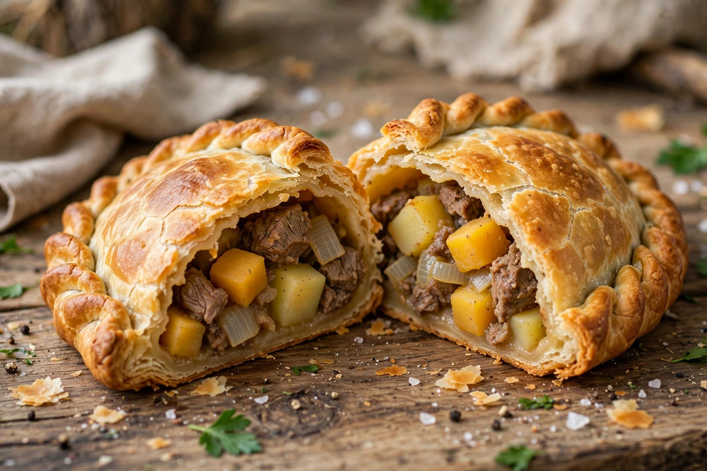

From Wikipedia, the free encyclopedia
| Pasty | |
|---|---|
 A Cornish pasty | |
| Type | Savoury baked pastry |
| Place of origin | England (Cornwall) |
| Main ingredients | Shortcrust pastry; beef, potato, swede (rutabaga), onion |
| Protected status | "Cornish pasty" holds EU/UK Protected Geographical Indication (PGI) status (2011) |
A pasty is a British baked pastry, a traditional variety of which is particularly associated with Cornwall, South West England, but has spread all over the British Isles, and elsewhere via cultural diasporas. It is made by placing an uncooked filling, typically meat and vegetables, in the centre of a flat shortcrust pastry circle, and bringing the two sides together in the middle, then sealing them with a distinctive crimped edge to form a sealed semi-circular pocket.
The traditional Cornish pasty, which since 2011 has Protected Geographical Indication (PGI) status in Europe, is filled with beef (traditionally skirt steak), sliced or diced potato, swede (called "turnip" in Cornwall) and onion, seasoned with salt and pepper, and baked. The ingredients are raw when the pasty is assembled and cook inside the crust. Folklore associates the pasty with Cornish tin miners: the thick crimped edge served as a handle that could be held with dirty — potentially arsenic-contaminated — hands and then discarded. The pasty's cultural importance is celebrated with the chant "Oggy Oggy Oggy" and the World Pasty Championships held at the Eden Project.
Cornish miners carried the pasty abroad in the 19th century. It remains a staple of Michigan's Upper Peninsula, where Finnish and Cornish mining communities both claim it; in Australia and New Zealand pasties are standard bakery fare; and similar hand pies exist in Mexico (the paste of Hidalgo state, introduced by Cornish miners at Real del Monte) and in the mining regions of South Africa and the United States' Butte, Montana.